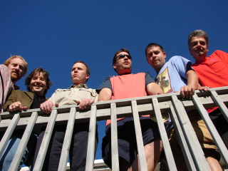

Concert for the Café
A group of musicians connected to the Dryden schools are coming together to help out a new local community organization. "Concert for the Café," featuring Hall Pass, Beyond Measure, and The Small Kings, will take place Saturday, January 12, at 7 p.m. in the Dryden High School/Middle School Auditorium.All three of the bands playing at the benefit concert have connections to the school. Beyond Measure is Dryden High School's award winning student a capella group, led by director Sandy Duncan, with the assistance of Nancy Hart. Although the members of the group change from year to year as some students graduate and others move in, they continue to produce precision harmonies and complex arrangements, recording CD's and competing in national competitions with great success.
 Hall Pass consists of four teachers and a principal: Middle School Band Director Bob McMahon on trumpet, Earth Science teacher Peter McWain on saxophone, Physics teacher Mike Mangini on drums, Beverly J. Martin elementary teacher Josh Taylor on bass, and Middle School Principal Ted Walsh on keyboard, guitar, and vocals. Taylor is a former aide and student teacher at Dryden whose wife, Karen teaches biology at Dryden High school. High School Band Director Rick Huyge and reading teacher Chuck Leo are also occasional members of the band.
Hall Pass describes its music as "Jazz. Blues. Whatever." It features an eclectic array of original music and jazz standards, as well as songs by Santana, Van Morrison, Bob Marley, Hank Williams, and others.
The Small Kings have performed in the Ithaca area for several years in various configurations. At the Concert for the Café, the Kings will consist of the duo of Frank Raponi and Jeff McCaffrey. Raponi is a math teacher and coach at Dryden Middle School as well as a versatile singer and guitarist who covers a wide variety of folk and rock artists.
Tickets for the performance will be $7 for adults and $5 for students and senior citizens. All proceeds will go to the Dryden Community Center Café.